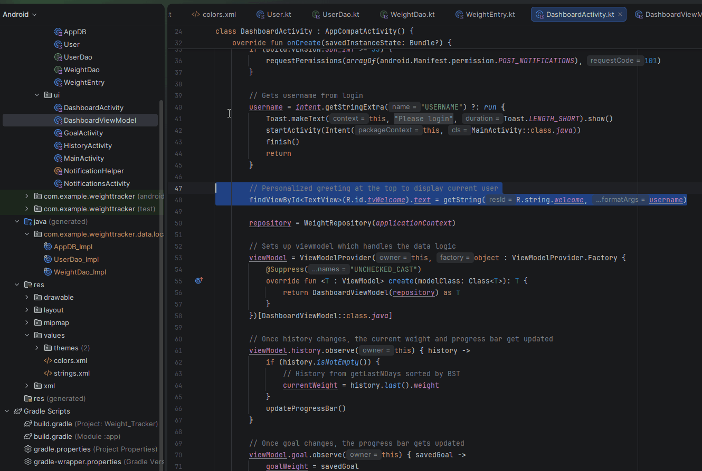
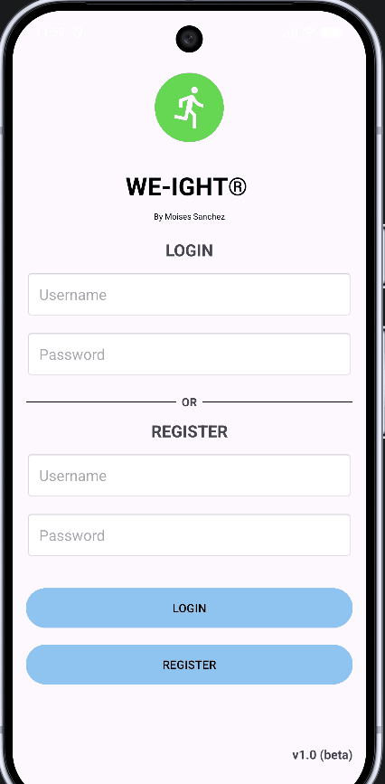
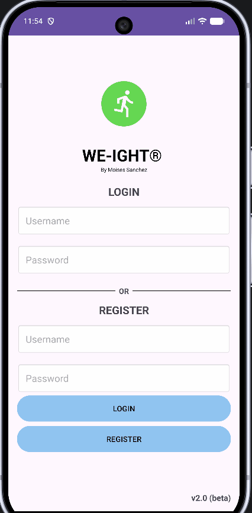

On this page
Artifact’s Origin
Artifact: CS360- Final project Weight Tracking App (Kotlin, XML, SQLite)
Developed on August 2026 for Mobile Architecture and Programming at SNHU
The application was developed as part of a project that required Android Studio environment. It’s original goal was to design an application that follows Android’s design foundations and best practices. The application’s core requirements were to provide CRUD operations and a trusted database, either local or online, where user data such as weight, username and passwords can be stored.
Justification
The original version had correct functionality for a history screen, however the architectural layer was inefficient and did not allow scalability. On the history screen, the application retrieves the entire weight history for a user with ORDER BY id, then parses within the loop to segregate only five queries. The current approach uses O(n) memory time where I only need O(k) where k=5. The history will eventually compound all entries, which in returns increases load times, slows down the application and risks memory leaks. The proposed enhancement includes refactoring the memory layer to use Binary Search Tree (BST) via TreeMap as it maintains sorting by date by eliminating loop parsing and full table scans. This approach reduces computing complexity, lowering resource consumption and adding logic to detect user progress, which improves the UI and UX for long term maintainability.
Enhancement Steps
1. Refactoring storage to use BST
I started by creating a new package and added a weightBST.kt inside. The class is a wrapper around TreeMap<LocalDate, WeightEntry> which implements a balanced BST. This new structure stores weight entries sorted by timestamps providing insertion methods, retrieving last entry and range queries. Previously, I used a linear List with O(n) that sorts and scans the entire list, this enhanced approach reduces complexity down to O(log n) operations.
class WeightBST {
// Binary search tree sorted by date
private val tree = TreeMap<LocalDate, WeightEntry>()
private val formatter = DateTimeFormatter.ofPattern("MM/dd/yyyy")
fun insert(entry: WeightEntry) {
val localDate = LocalDate.parse(entry.date, formatter)
tree[localDate] = entry
}
fun getLastEntry(): WeightEntry? = tree.lastEntry()?.value
fun size(): Int = tree.size
Additionally, I added getHistoryAsBST() method within my existing WeightRepository. This method will retrieve user history from Room and will now build a weightBST instance. This method also uses Dispatchers.IO to maintain off-thread database access. Comparing in with the previous function that directly returned the list from DAO, this enhancement returns a sorted BST list which solves my chronological order concerns.
private suspend fun getHistoryAsBST(username: String): WeightBST {
return withContext(Dispatchers.IO) {
val list = dao.getHistory(username)
val bst = WeightBST()
list.forEach { bst.insert(it) }
bst
}
}
2. Adding range query for retrieval efficiency
I improved retrieval efficiency by using TreeMap<LocalDate, WeightEntry> structure. Instead of a linear filtering O(n) over the entire list, I used lastEntry() to obtain the latest date in O(log n) and descendingMap() for the last N days. The new operation is O(log n + k) where k = the number of records return – avoiding a full scan.
fun getLastEntry(): WeightEntry? = tree.lastEntry()?.value
fun size(): Int = tree.size
// Retrieve only last N days rather than doing a full history scan
fun getLastNDays(n: Int): List<WeightEntry> {
if (tree.isEmpty()) return emptyList()
// Get last N values from ordered map without full scan
return tree.descendingMap().values.take(n).toList().reversed()
}
The user interface will now reflect this since I added wrapper getLastNDaysHistory() within my WeightRepository.
// Wrapper exposing range query to viewmodel
suspend fun getLastNDaysHistory(username: String, n: Int): List<WeightEntry> {
return withContext(Dispatchers.IO) {
val bst = getHistoryAsBST(username)
bst.getLastNDays(n)
}
}
// Get recent weight entry via BST
suspend fun getLastEntry(username: String): WeightEntry? {
return withContext(Dispatchers.IO) {
val bst = getHistoryAsBST(username)
bst.getLastEntry()
}
}
// Weight change calculation using BST structure
suspend fun getWeightDifference(username: String): Float {
return withContext(Dispatchers.IO) {
getHistoryAsBST(username).getWeightDifference()
}
}
3. Updating weight calculations and modifying the notifications
For this step, I updated the weight calculations and modifying the notifications to take advantage of the new BST structure. In my original version, both of these features relied on scanning and sorting the entire history list resulting in O(n) complexity calculations. After refactoring them to use weightBST methods such as getLastEntry(), and firstEntry() , I already reduced operations to O(log n + k) which ensure fast calculations and provides efficient reminder checks.
In the DashboardActivity module, I replaced history[0] to history.last() since getLastNDays() is now returning data that is already sorted in the BST.
// History from getLastNDays sorted by BST
currentWeight = history.last().weight
}
updateProgressBar()
}
Adjusted the getWeightDifference to return float to match the WeightEntry type by adding a check that returns 0f if there are less that two entries.
fun getWeightDifference(): Float {
if (tree.size < 2) return 0f
val firstWeight = tree.firstEntry()?.value?.weight?.toFloat() ?: 0f
val lastWeight = tree.lastEntry()?.value?.weight?.toFloat() ?: 0f
return lastWeight - firstWeight
}
Refactored showGoalReachedIfNeeded() to accept WeightEntry instead of a list by using lastEntry.Weight to get the most recent weight
// Now it takes BST instead of list for last entry check
fun showGoalReachedIfNeeded(context: Context, lastEntry: WeightEntry, goal: Int) {
// gets current weight directly from BST
val currentWeight = lastEntry.weight.toInt()
// calculates progress using current and goal
val progress = (currentWeight.toDouble() / goal * 100).toInt()
//build notification from WeightEntry
if (progress >= 100) {
showGoalReached(context, goal, currentWeight)
}
}
Updated the load() to build the BST and reuse for the history screen and getWeightDifference O(log n) instead of doing two separate scans
fun load(username: String) {
viewModelScope.launch {
// O(log n + k) for dashboard chart, not a full scan
_history.value = repo.getLastNDaysHistory(username,30)
// O(log n) for access to last entry
_weightDiff.value = repo.getWeightDifference(username)
_goal.value = repo.getLastTarget(username) ?: 0.0
}
}
4. Updating the UI layer to display new records more efficiently
For this step, I updated the UI layer while maintaining my original five record layout. In my initial version HistoryActivity relied on the repository.getHistory() which caused the app to load the entire history list assuming the last entry was history[0] resulting in a full scan. After refactoring to use WeightBST structure, I can now use getLastNDays(username, 5) with O(log n + k) lookup to get only those five records that I want to display. At the end, I was able to optimize the refreshHistory method while maintaining my original layout.
Now using BST for efficient record display and safe techniques for memory use
private fun refreshHistory() {
lifecycleScope.launch {
// Build BST from Room data to display last 5 entries from current user
val last5 = repository.getLastNDaysHistory(username, 5)
// O(log n ) to get newest entry without scanning entire list
val lastEntry = last5.lastOrNull()
val lastTarget = repository.getLastTarget(username)
O(log n) lookups gets newest entry directly from the BST via getLastEntry() without checking the full list.
if (lastEntry != null) {
currentWeight = lastEntry.weight
}
Additional features that apply Industry’s best practices
Some other features were based on eliminating the application’s warnings from string concatenations such as “Welcome, $username” , since format crashes when using percentages for a Double.
By applying best practices, all the UI text has been located under my strings.xml by using placeholders %1$s and %1$.0f being accessed via getString(R.string.welcome, username) for example. This removed the `SetText` warnings from the environment and enable a more structured architecture.

Figure 4: Personalized Greeting + Strings placeholders
I removed the showAddWeightDialog class from the HistoryActivity module to have a cleaner code – making each screen handle the necessary functions without duplicating long lines of code that I had on the original artifact. Finally, I reviewed the classes from each module, along with pointers to BST sorting for history, getLastEntry() for O(log n) retrievals, permission for handling notifications, navigation flows and kept comments functional and brief, to ensure it explains the code properly without exposing implementation details.
View my Enhancement Two Code on Github

Figure 5: Original - History Screen

Figure 6: Enhanced - History Screen
Note
My original application allowed multiple weight entries for the same day, used O(n) lookups to search history, and allowed accidental entry deletions. Using a more structured BST and following best practices, the enhanced version offers faster load times and uses safety checks, thus handling user data securely.
Challenges
I. Unresolved reference. I initially declared val repository = WeightRepository inside onCreate. Local variables such as this only exist within the function’s frame. The compiler didn't build when I tried to use refreshHistory() as it was out of scope.
II. Suspend function error. getHistoryAsBST() does Room database I/O which uses withContext. Kotlin didn’t allow me to call from a regular function because it could freeze my UI. I mitigated this by wrapping it inside lifecycleScope.launch{}.
III. Import error for WeightBST. The BST file was located in data.local.structure.WeightBST.kt. But since Kotlin doesn't auto import from other packages after refactoring. I manually added it with as import com.example.weighttracker.data.local.structure.WeightBST. This reinforces the importance on carefully migrating files and modules, as small details as these can cause the compiler to fail.
IV.Type mismatch error. In getWeightDifference() , firstEntry() , lastEntry() all returned Map.Entry, not a Float. I extracted the weight .value from tree.firstEntry()?.value?.weight?.toFloat() ?: 0f.
V. Private access error. When I first added getHistoryAsBST() inside WeightRepository, I marked it as private suspend fun because it is an internal builder that converts Room List into a WeightBST. I kept getHistoryAsBST() private and exposed only what the UI needs through three public wrapper methods in the repository.
VI. Type mismatch. In NotificationHelper the old call passed a List, causing a compile type mismatch because the compiler was expecting one entry but got the entire list. After refactoring, I changed the signature to accept only the newest entry to achieve O(log n) lookup.
Outcomes
This enhanced version of my weight tracking application replaces full O(n) scans of the history list with a Binary Search Tree structure using TreeMap and reducing operations by using firstEntry/lastEntry() to O(log n + k). This shows design and evalution of computing solutions while managing trade-offs between memory overhead and access time. The updated Dashboard and notification system using getLastNDays() to display with a single WeightEntry providing timely visual feedback that supports user decision-making. Keeping getHistoryAsBST() private, and if tree.isEmpty() handling enforces encapsulation and anticipates empty data exploits to protect data integrity. Documenting all compilation errors and challenges such as the unresolved references and type mismatches after refactoring, represent professional quality written communication that adapts to a technical audience.
Overall, the updated version of this artifact does not add UI elements, rather, improves the lookup complexity to ensure scalability as data grows, thus ensuring that the functionalities and user experience improve, while maintaining the original architecture of the model and continuing aligning to best practices.